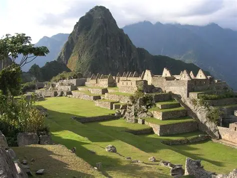

La Ciudad Perdida, conocida por los pueblos indígenas como Teyuna, es uno de los tesoros arqueológicos más importantes de Colombia y de toda América Latina. Está ubicada en la Sierra Nevada de Santa Marta, una de las montañas costeras más altas del mundo. Este antiguo asentamiento fue construido por la civilización Tairona alrededor del siglo VIII, varios siglos antes de la llegada de los españoles.
Durante muchos años permaneció oculta entre la densa vegetación de la selva, razón por la cual recibió el nombre de "Ciudad Perdida". Su redescubrimiento permitió conocer más sobre la cultura Tairona, una sociedad avanzada que desarrolló complejos sistemas de caminos, terrazas y canales de drenaje adaptados al entorno montañoso.
Los arqueólogos consideran que la Ciudad Perdida fue un importante centro político, económico y religioso de la cultura Tairona. En ella vivían cientos de personas dedicadas al comercio, la agricultura y las actividades ceremoniales. La ciudad estaba conectada con otros poblados mediante una extensa red de caminos de piedra que atravesaban la Sierra Nevada.
Con la llegada de los conquistadores españoles en el siglo XVI, muchas comunidades indígenas abandonaron la región debido a enfermedades, conflictos y cambios sociales. Con el paso del tiempo, la vegetación cubrió completamente las estructuras y el lugar permaneció oculto durante siglos.
Para visitar la Ciudad Perdida es necesario realizar una caminata guiada que generalmente dura entre cuatro y seis días. El recorrido comienza cerca de la ciudad de Santa Marta y atraviesa senderos de montaña, ríos y zonas de selva. Durante el trayecto, los visitantes pueden disfrutar de paisajes espectaculares y conocer comunidades indígenas que habitan la región.
Al llegar al sitio arqueológico, los turistas deben subir aproximadamente 1.200 escalones de piedra para acceder a las principales terrazas y estructuras. El esfuerzo es recompensado con una vista impresionante y una experiencia única en contacto con la historia y la naturaleza.
La Ciudad Perdida tiene un gran valor histórico, arqueológico y cultural. Además de ser un atractivo turístico reconocido internacionalmente, es un lugar sagrado para varios pueblos indígenas de la Sierra Nevada de Santa Marta, como los Kogui, Arhuaco, Wiwa y Kankuamo.
Estos pueblos consideran la zona como el corazón espiritual del mundo y trabajan junto con las autoridades para proteger y conservar este patrimonio. Gracias a su importancia, la Ciudad Perdida es hoy uno de los destinos más visitados por viajeros interesados en la historia, la arqueología y la naturaleza.
Visitar la Ciudad Perdida es una experiencia inolvidable que combina aventura, cultura e historia. Este lugar permite conocer el legado de la civilización Tairona y admirar uno de los paisajes naturales más impresionantes de Colombia. Por ello, es considerado uno de los destinos turísticos más fascinantes del país y un símbolo del patrimonio cultural colombiano.
